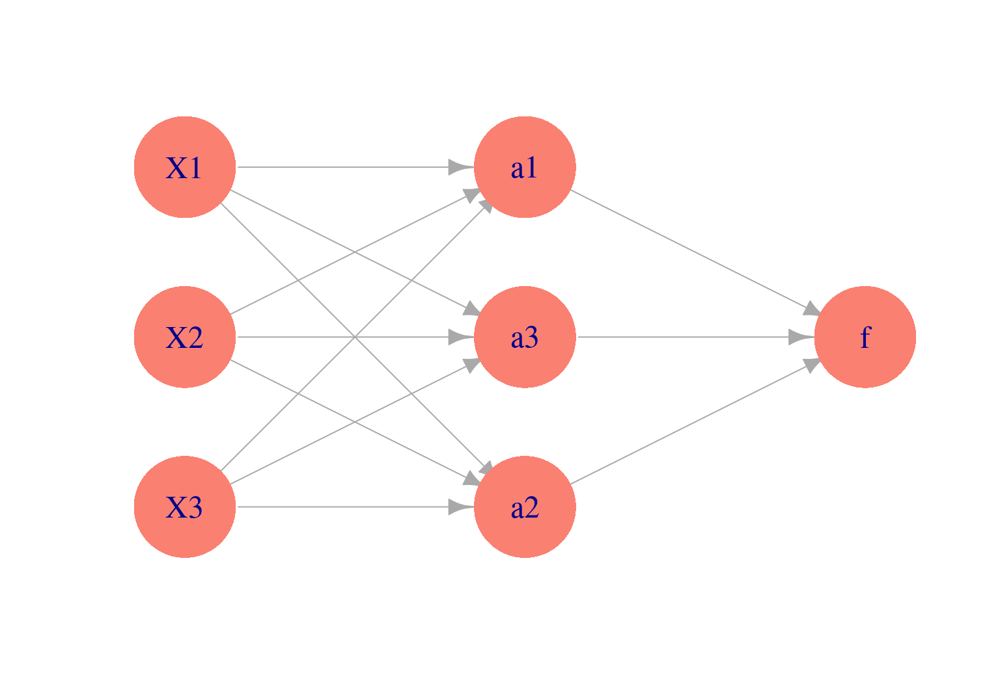
6 Redes neuronales (intro)
6.1 Introducción a redes neuronales
En partes anteriores, vimos cómo hacer más flexibles los métodos de regresión: la idea es construir entradas derivadas a partir de las variables originales, e incluirlas en el modelo de regresión. Este enfoque es bueno cuando tenemos relativamente pocas variables originales de entrada, y tenemos una idea de qué variables derivadas es buena idea incluir (por ejemplo, splines para una variable como edad, interacciones para variables importantes, etc). Sin embargo, si hay una gran cantidad de entradas, esta técnica puede ser prohibitiva en términos de cálculo y trabajo manual.
Por ejemplo, si tenemos unas 100 entradas numéricas, al crear todas las interacciones \(x_i x_j\) y los cuadrados \(x_i^2\) terminamos con unas 5150 variables. Para el problema de dígitos (256 entradas o pixeles) terminaríamos con unas 32 mil entradas adicionales. Aún cuando es posible regularizar, en estos casos suena más conveniente construir entradas derivadas a partir de los datos.
Para hacer esto, consideramos entradas \(X_1, . . . , X_p\), y supongamos que tenemos un problema regresión donde queremos predecir \(Y\). Aunque hay muchas maneras de construir entradas derivadas, una manera simple sería construir \(m\) nuevas entradas mediante:
\[a_k = h \left ( \theta_{k,0} + \sum_{j=1}^p \theta_{k,j}x_j \right)\]
para \(k=1,\ldots, m\), donde \(h\) es una función no lineal (logística o relu entre otras), y las \(\theta\) son parámetros que seleccionaremos más tarde. La idea es hacer combinaciones lineales de variables transformadas.
Modelamos ahora la respuesta usando las entradas derivadas en lugar de las originales:
\(a_1, . . . , a_m\): \[f(x) = \beta_0 + \sum_{j=1}^m \beta_ja_j\]
Podemos representar este esquema con una red dirigida (\(m=3\) variables derivadas):
La función logística
Una de las transformaciones \(h\) más comunes para construir entradas derivadas es la función logística:
La función logística está dada por \[h(x)=\frac{e^x}{1+e^x}\]
h <- function(x){exp(x)/(1+exp(x)) }
ggplot(tibble(x = seq(-6, 6, 0.01)), aes(x = x)) + stat_function(fun = h)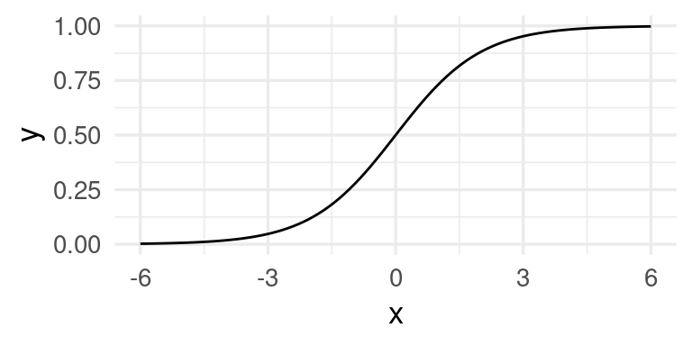
Observaciones:
- ¿Por qué usar \(h\) para las entradas derivadas \(a_k\)? En primer lugar, nótese que si no transformamos con alguna función no lineal \(h\), el modelo final \(p_1\) para la probabilidad condicional es el mismo que el de regresión logística (combinaciones lineales de combinaciones lineales son combinaciones lineales). Sin embargo, al transformar con \(h\), las \(x_j\) contribuyen de manera no lineal a las entradas derivadas.
- Las variables \(a_k\) que se pueden obtener son similares (para una variable de entrada) a los splines que vimos en la parte anterior.
- Es posible demostrar que si se crean suficientes entradas derivadas (\(m\) es suficientemente grande), entonces la función \(f(x)\) puede aproximar cualquier función continua. La función \(h\) (que se llama función de activación no es especial: funciones continuas con forma similar a la sigmoide (logística) pueden usarse también (por ejemplo, arcotangente, o lineal rectificada). La idea es que cualquier función se puede aproximar mediante superposición de funciones tipo sigmoide (ver por ejemplo Cybenko 1989, Approximation by Superpositions of a Sigmoidal Function).
¿Cómo construyen entradas las redes neuronales?
Comencemos por un ejemplo simple de clasificación binaria con una sola entrada \(x\). Supondremos que el modelo verdadero está dado por:
h <- function(x){
1/(1 + exp(-x)) # es lo mismo que exp(x)/(1 + exp(x))
}
x <- seq(-2, 2, 0.1)
f <- atan(2 - 2 * x^2)
set.seed(2805721)
x_1 <- runif(10, -2, 2)
f_1 <- rnorm(10, atan(2 - 2 * x_1^2), 0.2)
datos <- tibble(x_1, f_1)
dat_f <- tibble(x, f)
g <- ggplot(dat_f) + geom_line(aes(x, f))
g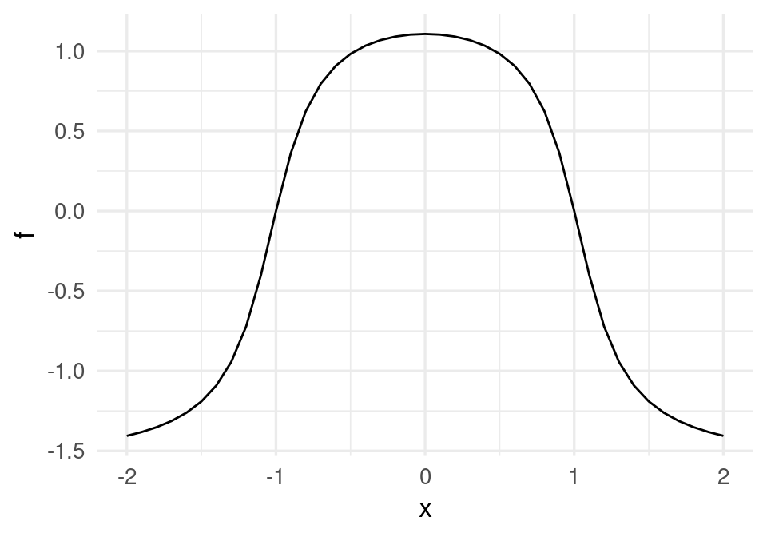
g + geom_point(data = datos, aes(x = x_1, y = f_1), colour = 'red')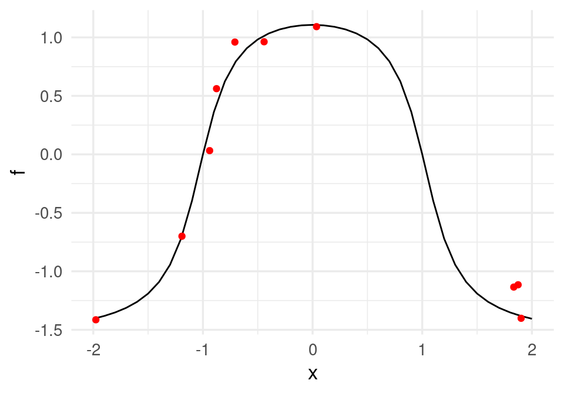
donde adicionalmente graficamos 30 datos simulados. Recordamos que queremos ajustar la curva roja, que da la probabilidad condicional de clase. Podríamos ajustar un modelo de regresión logística expandiendo manualmente el espacio de entradas agregando \(x^2\), y obtendríamos un ajuste razonable. Pero la idea aquí es que podemos crear entradas derivadas de forma automática.
Supongamos entonces que pensamos crear dos entradas \(a_1\) y \(a_2\), funciones de \(x_1\), y luego predecir \(g.1\), la clase, en función de estas dos entradas. Por ejemplo, podríamos tomar:
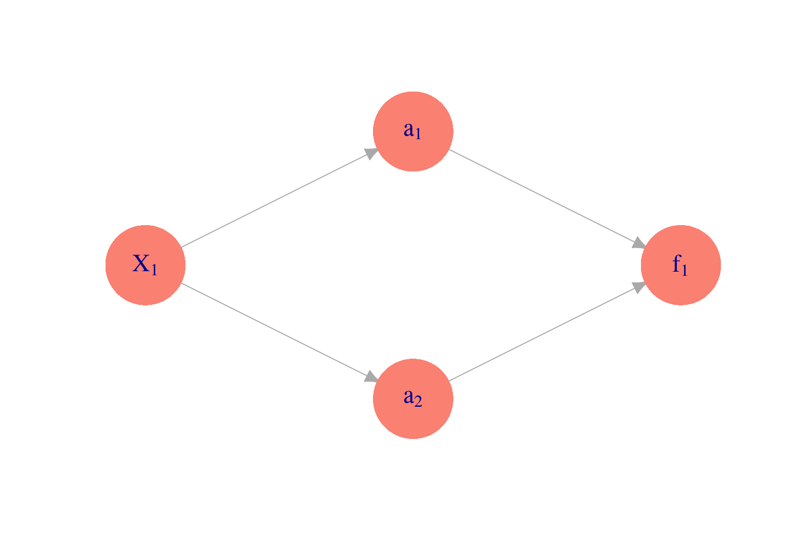
donde hacemos una regresión para predecir \(y\) mediante \[f(a) = \beta_0 + \beta_1a_1+\beta_2 a_2,\] \(a_1\) y \(a_2\) están dadas por \[a_1(x)=h(\beta_{1,0} + \beta_{1,1} x_1),\] \[a_2(x)=h(\beta_{2,0} + \beta_{2,1} x_1).\]
Por ejemplo, podríamos tomar
a_1 <- h( 1 + 2 * x) # 2(x+1/2)
a_2 <- h(-1 + 2 * x) # 2(x-1/2) # una es una versión desplazada de otra.Las funciones \(a_1\) y \(a_2\) dependen de \(x\) de la siguiente forma:
dat_a <- tibble(x = x, a_1 = a_1, a_2 = a_2)
dat_a_2 <- dat_a |> gather(variable, valor, a_1:a_2)
ggplot(dat_a_2, aes(x=x, y=valor, colour=variable, group=variable)) + geom_line()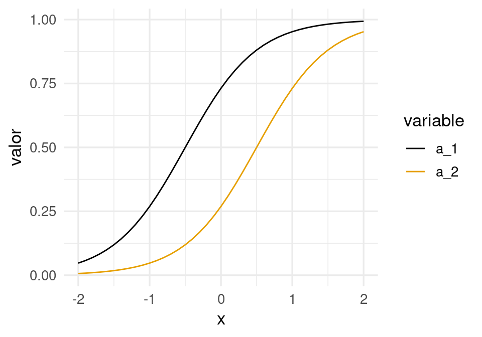
Si las escalamos y sumamos, obtenemos
dat_a <- data.frame(x=x, a_1 = -1 + 3 * a_1, a_2 = -3 * a_2, suma = -1 + 3 * a_1 - 3 * a_2)
dat_a_2 <- dat_a |> gather(variable, valor, a_1:suma)
ggplot(dat_a_2, aes(x = x, y = valor, colour = variable, group = variable)) + geom_line()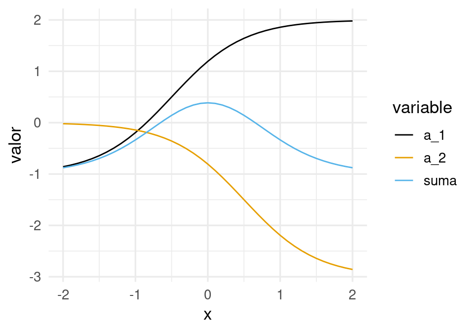
y finalmente, aplicando \(h\):
dat_2 <- tibble(x, f2 = (-1.5 + 6 * a_1 - 6 * a_2))
ggplot(dat_2, aes(x=x, y = f2)) + geom_line()+
geom_line(data=dat_f, aes(x=x,y=f), col='red') +
geom_point(data = datos, aes(x = x_1, y = f_1))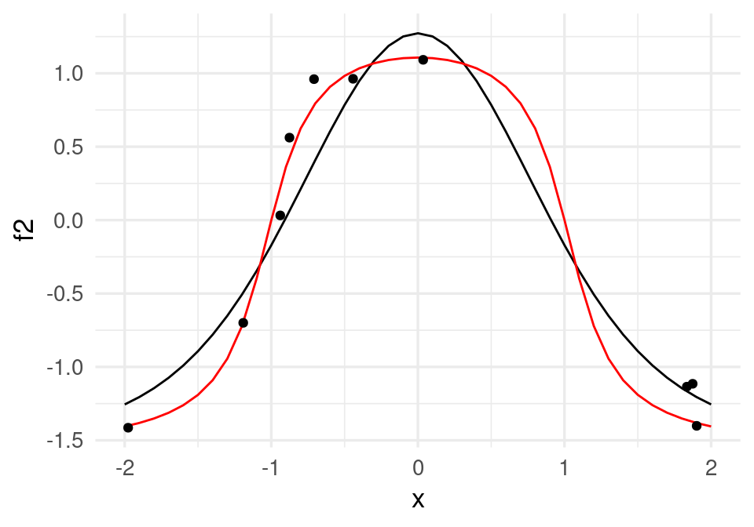
que da un ajuste razonable. Este es un ejemplo de cómo la mezcla de dos funciones logísticas puede replicar esta función con forma de chipote.
¿Cómo ajustar los parámetros?
Para encontrar los mejores parámetros, minimizamos la devianza sobre los parámetros \(\beta_0,\beta_1,\beta_2\) y \(\beta_{1,0},\beta_{1,1},\beta_{2,0},\beta_{2,1}\).
Veremos más adelante que conviene hacer esto usando descenso o en gradiente o descenso en gradiente estocástico, pero por el momento usamos la función optim de R para minimizar la devianza. En primer lugar, creamos una función que para todas las entradas calcula los valores de salida. En esta función hacemos feed-forward de las entradas a través de la red para calcular la salida.
## esta función calcula los valores de cada nodo en toda la red,
## para cada entrada
feed_fow <- function(beta, x){
a_1 <- h(beta[1] + beta[2] * x) # calcula variable 1 de capa oculta
a_2 <- h(beta[3] + beta[4] * x) # calcula variable 2 de capa oculta
f <- (beta[5] + beta[6] * a_1 + beta[7] * a_2) # calcula capa de salida
f
}Nótese que simplemente seguimos el diagrama mostrado arriba para hacer los cálculos, combinando linealmente las entradas en cada capa.
Ahora definimos una función para calcular la devianza. Conviene crear una función que crea funciones, para obtener una función que sólo se evalúa en los parámetros para cada conjunto de datos de entrenamiento fijos:
perdida_cuad_fun <- function(x, y){
# esta función es una fábrica de funciones
perdida_cuad <- function(beta){
f <- feed_fow(beta, x)
sum((y - f)^2)
}
perdida_cuad
}Por ejemplo:
perdida_cuad <- perdida_cuad_fun(x_1, f_1) # crea función
## ahora dev toma solamente los 7 parámetros beta:
perdida_cuad(c(0,0,0,0,0,0,0))[1] 10.34101Finalmente, optimizamos la devianza. Para esto usaremos la función optim de R:
set.seed(5)
salida <- optim(rnorm(7), perdida_cuad, method = 'BFGS') # inicializar al azar punto inicial
beta <- salida$par
beta[1] -8.206850 4.746303 -6.963456 -6.753229 1.093029 -3.496124 -2.488785Y ahora podemos graficar con el vector \(\beta\) encontrado:
## hacer feed forward con beta encontrados
p_2 <- feed_fow(beta, x)
dat_2 <- data.frame(x, p_2 = p_2)
ggplot(dat_2, aes(x = x, y = p_2)) + geom_line()+
geom_line(data = dat_f, aes(x = x, y = f), col='red') +
geom_point(data = datos, aes(x = x_1, y = f_1))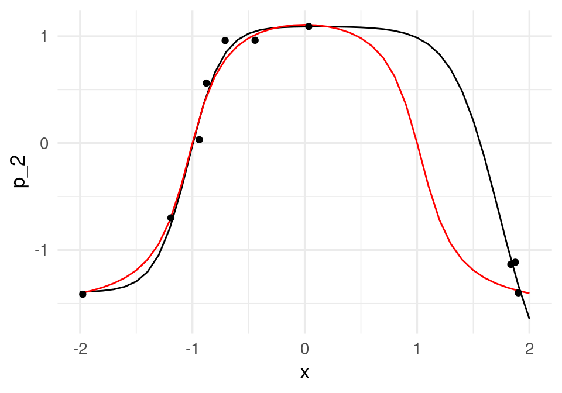
Los coeficientes estimados, que en este caso muchas veces se llaman pesos, son:
beta |> round(2)[1] -8.21 4.75 -6.96 -6.75 1.09 -3.50 -2.49que parecen ser muy grandes. Igualmente, de la figura vemos que el ajuste no parece ser muy estable (esto se puede confirmar corriendo con distintos conjuntos de entrenamiento). Podemos entonces regularizar ligeramente la devianza para resolver este problema. En primer lugar, definimos la devianza regularizada (ridge), donde penalizamos todos los coeficientes que multiplican a una variable, pero no los intercepts:
perdida_cuad_fun_r <- function(x, y, lambda){
# esta función es una fábrica de funciones
perdida_reg <- function(beta){
f <- feed_fow(beta, x)
# en esta regularizacion quitamos sesgos, pero puede hacerse también con sesgos.
sum((y - f)^2) + lambda * sum(beta[-c(1,3,5)]^2)
}
perdida_reg
}perdida_r <- perdida_cuad_fun_r(x_1, f_1, 0.01) # crea función dev
set.seed(5)
salida <- optim(rnorm(7, 0, 1), perdida_r, method = 'BFGS') # inicializar al azar punto inicial
beta <- salida$par
perdida_cuad(beta) / nrow(datos)[1] 0.01837429p_2 <- feed_fow(beta, x)
dat_2 <- data.frame(x, p_2 = p_2)
beta[1] -2.046311 2.117196 -4.290177 -4.202192 1.471246 -3.071258 -2.964481ggplot(dat_2, aes(x = x, y = p_2)) + geom_line() +
geom_line(data = dat_f, aes(x = x, y = f), col='red') +
geom_point(data = datos, aes(x = x_1, y = f_1))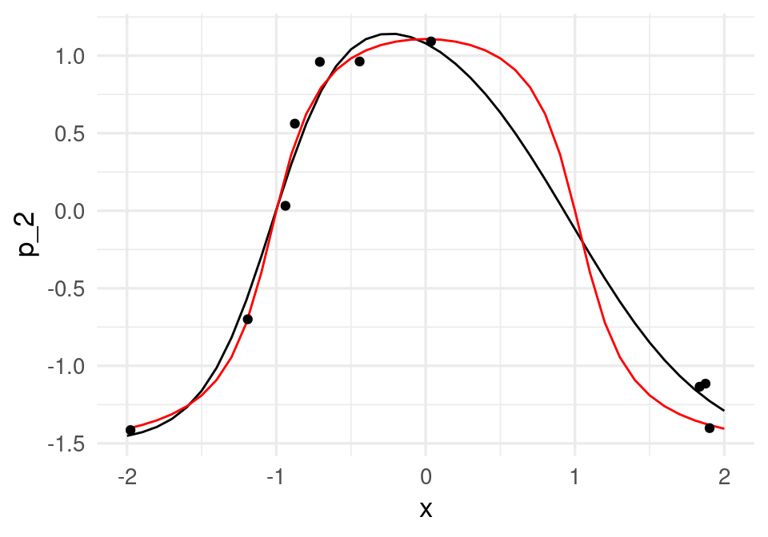
y obtenemos un ajuste más estable. Podemos usar también keras. El modelo, con una capa intermedia de dos unidades, y regularización ridge para los coeficientes, y optimización por descenso en gradiente se define como:
library(keras)
# para reproducibilidad:
tensorflow::tf$random$set_seed(13)
# construir modelo
ejemplo_mod <- keras_model_sequential()
ejemplo_mod |>
layer_dense(units = 2,
activation = "sigmoid", kernel_regularizer = regularizer_l2(0.001)) |>
layer_dense(units = 1,
activation = "linear", kernel_regularizer = regularizer_l2(0.001))x_mat <- as.matrix(datos$x_1, ncol = 1)
y <- datos$f_1
# usamos devianza como medida de error y descenso en gradiente:
ejemplo_mod |> compile(loss = "mse",
optimizer = optimizer_sgd(learning_rate = 0.5),
metrics = "mse")
# nota: esta learning rate (lr) es demasiado alta para problemas típicos
historia <- ejemplo_mod |>
fit(x_mat, y,
batch_size = nrow(x_mat), epochs = 1000, verbose = 0)Después de verificar convergencia (chécalo examinando la variable historia), graficamos para ver que obtuvimos resultados similares:
dat_3 <- tibble(x = x, f_2 = predict(ejemplo_mod, as.matrix(x, ncol = 1)))
ggplot(dat_3, aes(x = x, y = f_2)) + geom_line()+
geom_line(data = dat_3, aes(x = x, y = f), col='red') +
geom_point(data = datos, aes(x = x_1, y = f_1))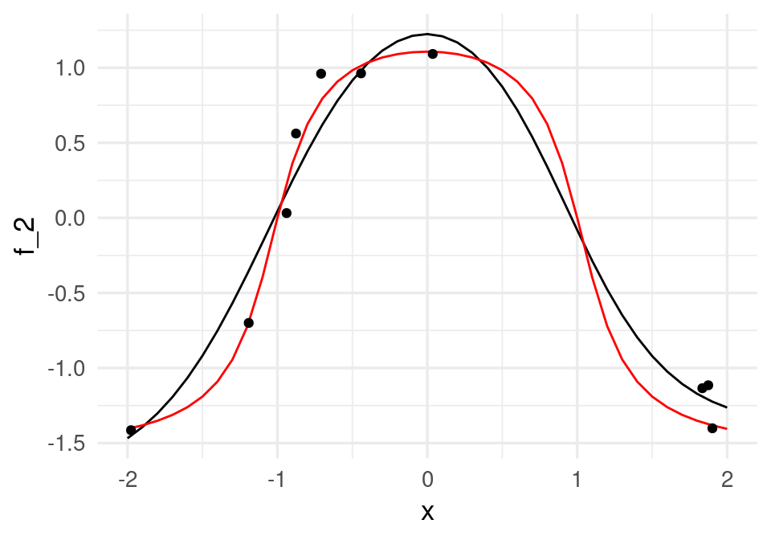
Los coeficientes obtenidos se muestran abajo. Nótese: la primera componente de la lista son los coeficientes de la unidad 1 y 2 para \(x\). La segunda son los sesgos u ordenadas al origen, la tercera los coeficientes de la respuesta para las unidades 1 y 2, y el cuarto es el sesgo u ordenada al origen de la unidad de salida:
get_weights(ejemplo_mod)[[1]]
[,1] [,2]
[1,] 2.13491 -3.909242
[[2]]
[1] -1.920564 -3.972081
[[3]]
[,1]
[1,] -3.095131
[2,] -3.058084
[[4]]
[1] 1.543818Ejercicio: compara los coeficientes que obtuviste en este ejemplo con los anteriores.
6.2 Interacciones en redes neuronales
Es posible capturar interacciones con redes neuronales. Consideremos el siguiente ejemplo simple:
f <- function(x1, x2){
2 + 0.1* x1 + 0.1 * x2 + 10 * (x1 - 0.5) * (x2 - 0.5)
}
dat <- expand.grid(x1 = seq(0, 1, 0.05), x2 = seq(0, 1, 0.05))
dat <- dat |> mutate(f = f(x1, x2))
ggplot(dat, aes(x=x1, y=x2)) + geom_tile(aes(fill=f))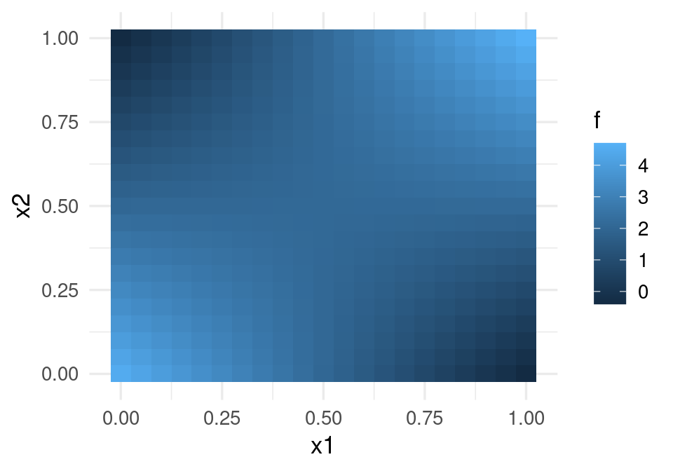
Esta función puede entenderse como un o exclusivo: la respuesta es alta sólo cuando \(x_1\) y \(x_2\) tienen valores opuestos (\(x_1\) grande pero \(x_2\) chica y viceversa).
No es posible modelar correctamente esta función mediante el modelo lineal (sin interacciones). Pero podemos incluir la interacción en el modelo lineal o intentar usar una red neuronal. Primero simulamos unos datos y probamos el modelo logístico con y sin interacciones:
set.seed(322)
n <- 2000
dat_ent <- tibble(x1 = rbeta(n, 1, 1), x2 = rbeta(n, 1, 1)) |>
mutate(f = f(x1, x2)) |>
mutate(y = f + rnorm(n, 0, 0.1))
mod_1 <- lm(y ~ x1 + x2, data = dat_ent)
mod_1
Call:
lm(formula = y ~ x1 + x2, data = dat_ent)
Coefficients:
(Intercept) x1 x2
1.8936 0.2046 0.2097 El resultado del modelo lineal no es bueno:
tibble(y_hat = fitted(mod_1), y = dat_ent$y) |>
ggplot(aes(x = y_hat, y = y)) + geom_point(color = "red") +
geom_abline() +
coord_obs_pred()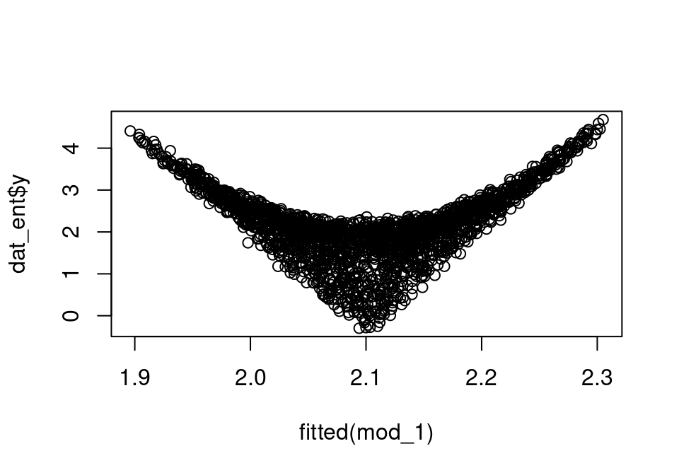
Sin embargo, agregando una interacción lo mejoramos considerablemente (examina la raíz del error cuadrático medio, por ejemplo):
mod_2 <- lm(y ~ x1 + x2 + x1:x2, data = dat_ent)
mod_2
Call:
lm(formula = y ~ x1 + x2 + x1:x2, data = dat_ent)
Coefficients:
(Intercept) x1 x2 x1:x2
4.499 -4.895 -4.885 9.964 tibble(y_hat = fitted(mod_2), y = dat_ent$y) |>
ggplot(aes(x = y_hat, y = y)) + geom_point(color = "red") +
geom_abline() +
coord_obs_pred()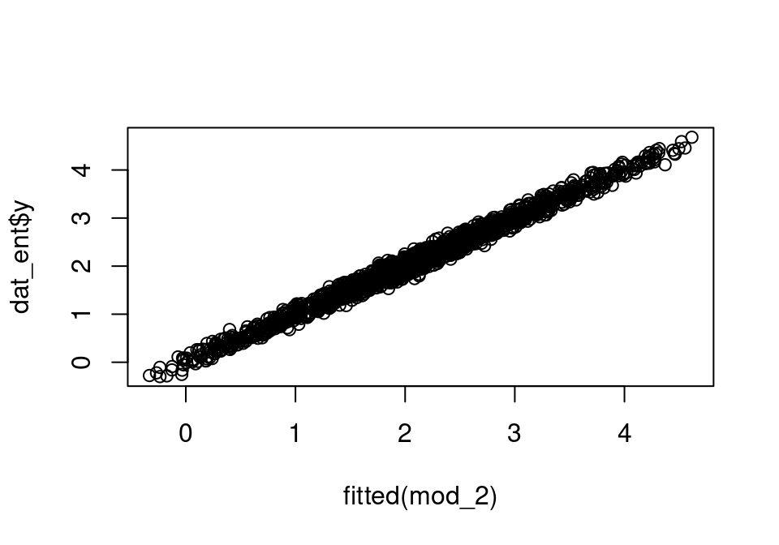
Observese la gran diferencia de error entre los dos modelos (en este caso, el sobreajuste no es un problema).
Ahora consideramos qué red neuronal puede ser apropiada.
mod_inter <- keras_model_sequential()
mod_inter |>
layer_dense(units = 4, activation = "sigmoid",
name = "capa_intermedia", input_shape = c(2)) |>
layer_dense(units = 1, name = "capa_final",
activation = "linear") mod_inter |> compile(loss = "mse",
optimizer = optimizer_sgd(learning_rate = 0.1))
historia <- mod_inter |>
fit(dat_ent |> select(x1, x2) |> as.matrix(), dat_ent$y,
batch_size = 10,
epochs = 100, verbose = 0)Verificamos que esta red captura la interacción:
preds <- predict(mod_inter,
dat |> select(x1, x2) |> as.matrix())
dat <- dat |> mutate(f_red = preds)
ggplot(dat, aes(x = x1, y = x2)) +
geom_tile(aes(fill = f_red))Aunque podemos extraer los cálculos de la red ajustada, vamos a hacer el cálculo de la red a mano. La función feed forward es:
beta <- get_weights(mod_inter)
feed_fow <- function(beta, x){
a <- h(t(beta[[1]]) %*% x + as.matrix(beta[[2]], 2, 1))
f <- t(beta[[3]]) %*% a + as.matrix(beta[[4]], 1, 1)
f
}Observación: ¿cómo funciona esta red? Consideremos la capa intermedia (3 unidades) para cuatro casos: \((0,0), (0,1), (1,0), (1,1)\):
mat_entrada <- tibble(x_1 = c(0,0,1,1), x_2 = c(0,1,0,1)) |> as.matrix()
capa_1 <- keras_model(inputs = mod_inter$input,
outputs = get_layer(mod_inter, "capa_intermedia")$output)
pred_mat <- predict(capa_1, mat_entrada) |> round(2)
rownames(pred_mat) <- c("apagadas", "segunda", "primera", "ambas")
pred_mat [,1] [,2] [,3] [,4]
apagadas 0.03 0.21 0.82 0.08
segunda 0.13 0.61 0.12 0.00
primera 0.43 0.09 0.46 0.83
ambas 0.78 0.37 0.03 0.10Los pesos de la última capa son:
beta[3:4][[1]]
[,1]
[1,] 7.057923
[2,] -1.759884
[3,] 5.942777
[4,] -6.286882
[[2]]
[1] -0.214401Ejercicio: interpreta la red en términos de qué unidades están encendidas (valor cercano a 1) o apagadas (valor cercano a 0). ¿Puedes ajustar este modelo con dos tres unidades intermedias? Haz varias pruebas: ¿qué dificultades encuentras?